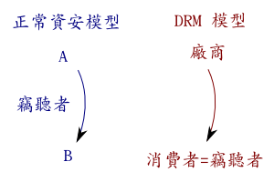

也紀念我們永遠的朋友 李士傑先生（Shih-Chieh Ilya Li）。
見不得人的 DRM 演算法
在正常的資安系統裡面，資訊從 A 傳送到 B 的過程當中，假設傳送途中可能被竊聽，所以必須先加密之後再傳送。簡化來講，一個正常的資安系統包含「加解密演算法」及「密碼」兩部分。只有「密碼」是秘密的，除了 A 與 B 之外，沒有其他人知道。一個好的加解密演算法，必須假設竊聽者知道「加解密演算法」及「加密過的資訊」。如果在這樣的前提下，竊聽者還是無法破解，這才算是一個好的、安全的加密演算法。這個原則叫做 Kerckhoffs’ principle。好的加解密演算法，不能僅靠兩三位資安專家提出，還需要透過發表論文解釋其數學原理，讓全世界的資安專家共同嘗試破解。把演算法攤在陽光下，經過眾多專家的嘗試，仍然無法破解，才有資格成為一個安全的演算法，商業界才敢大量使用。
但是在 DRM 系統的模型裡面，只有兩方，沒有第三方：接受資訊的消費者，就是竊聽者！DRM 廠商的預設模型就是：「你是賊！我要防範的，不是別人，就是你，消費者！」這個模型所引發的道德爭議姑且不談；我們這裡只談它所造成的技術死巷。DRM 系統的原則是：「只有我的軟體可以解密並播放數位內容；絕不允許消費者將解密完畢的資料儲存／寄送／或進行其他處理。」可是「播放」行為必須發生在消費者的電腦上，所以密碼必然也在消費者－－也就是廠商心目中的竊聽者－－的手中。要避免竊聽者（不透過我的軟體）自行解密的唯一方法，就是不讓她看懂加解密演算法。這個策略稱為 Security by Obscurity。這正好是 Kerckhoffs' principle 所不贊許的策略。簡單地說：「Security by obscurity is no security.」
從學術的角度來看，DRM 演算法無法經過同儕評審 peer review，它的學術價值及可信度是存疑的。我在網路上所能找到的人氣最高 DRM 技術論文，也只能欲言又止地解釋其策略，而不能給一個精確的演算法。順帶一提，就連該文作者也在另一文章裡談到：軟體 DRM 是不可能的任務。至於誠實面對技術問題的資安專家與程式高手，則一致認為 DRM 的 Security by Obscurity 策略不可行：
- Bruce Perens: Why Security-Through-Obscurity Won't Work
- Ed Felten: Security by Obscurity
- Tim Lee: Felten on DRM and Security through Obscurity
- Gernot Heiser: Obscurity and the Illusion of Security: "Obscurity provides no security，only an illusion of it."
但是「學術上站不住腳」對於 DRM 系統來講，只是困境的起點，而不是它必須面對的唯一問題。「演算法不可公開」所衍生的後果極其深遠。它將會把所有相信江湖郎中的人帶入極大的風險之中－－權益受傷害的將不只是消費者的隱私與人權。把智財商品賭注於見光死的 DRM 的投資人，也將會是受害者。如果放任利益團體以不安全的技術騙取法律及公權力的支持，到最後連路人甲的言論自由都會喪失；而公權力也將受到極大的折損。這些問題另文再討論。
※ 本文已徵得洪朝貴老師同意轉載，原文請見其部落格
Special


Address：No.128, Sec.2, Academia Rd., Institute of Information Science, Academia Sinica, Nangang District, Taipei City 11529, Taiwan (R.O.C).
Privacy Policy. Terms-of-use